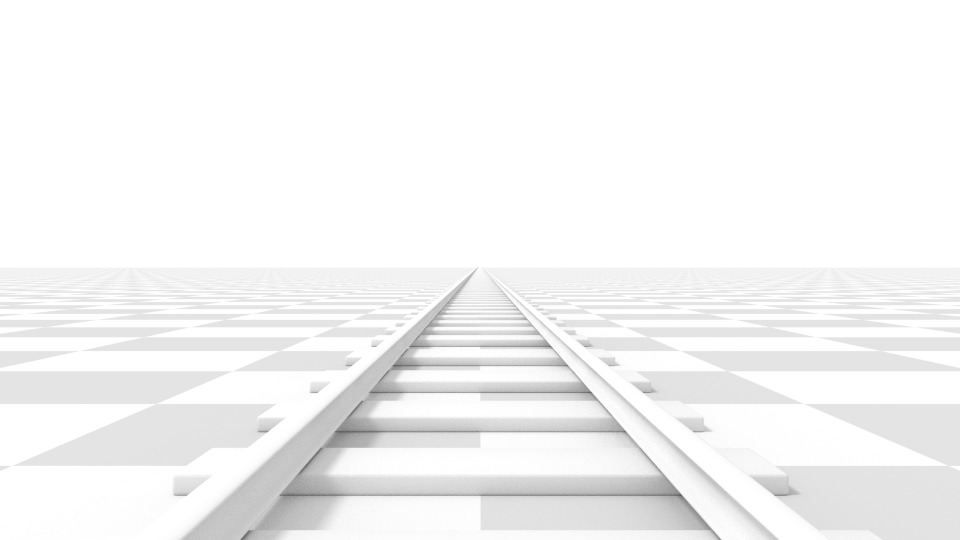
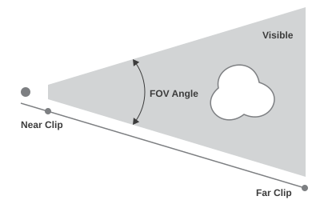
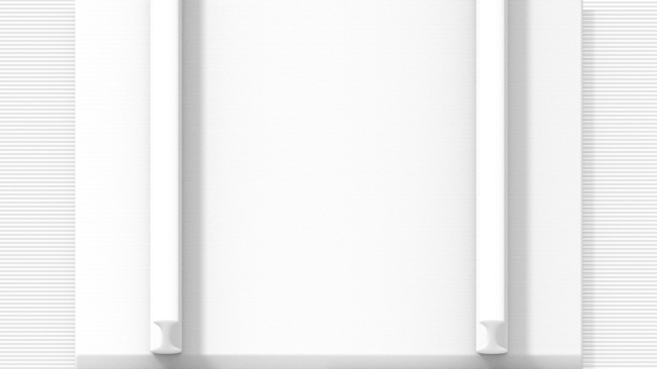
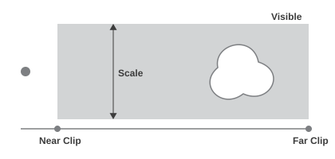
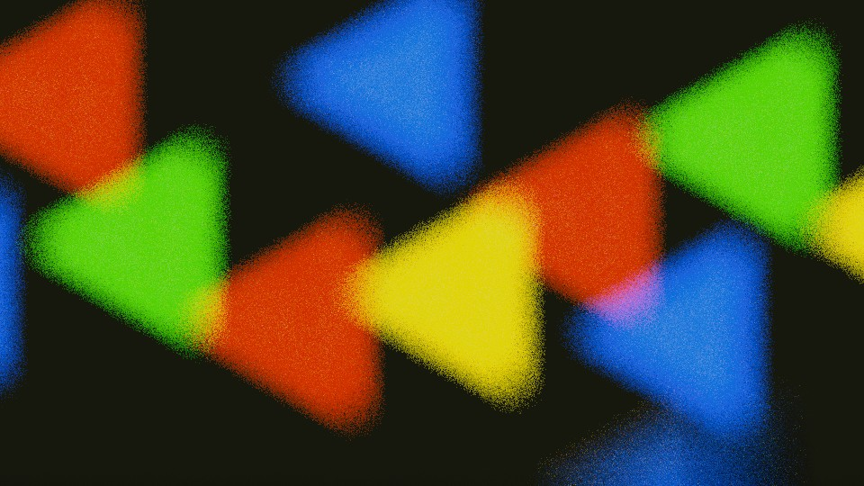
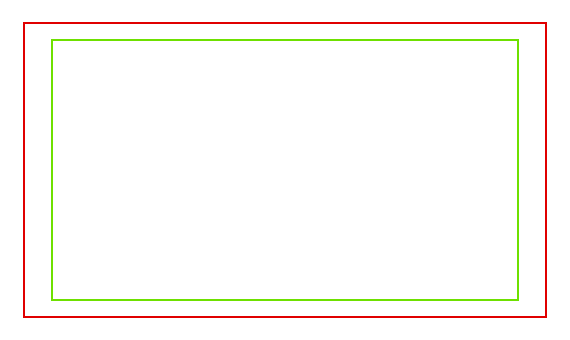
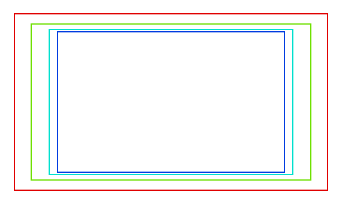
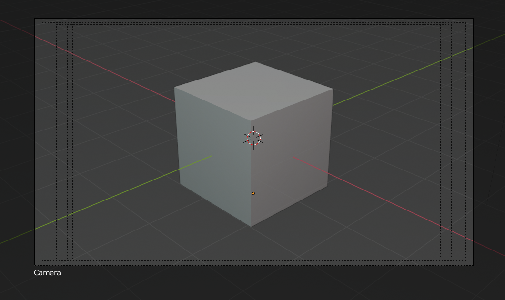

Cameras¶
Camera là một object cung cấp phương tiện để render hình ảnh từ Blender. Nó xác định phần nào của scene được nhìn thấy trong hình ảnh đã render.
Camera không nhìn thấy được trong bản render, nên chúng không có cài đặt material hay texture nào. Tuy nhiên, chúng vẫn có các panel cài đặt Object và Editing hiển thị khi một camera là active object.
Xem thêm
Xem Điều hướng Camera trong 3D Viewport để tìm tài liệu về việc quản lý camera trong viewport.
Properties¶
Tham khảo
- Mode:
Object Mode
- Editor:
Lens¶
Type
Các tùy chọn lens của camera kiểm soát cách các object 3D được biểu diễn trong hình ảnh 2D.
- Perspective
Điều này khớp với cách bạn nhìn mọi thứ trong thế giới thực. Object ở xa sẽ trông nhỏ hơn object ở phía trước, và các đường thẳng song song (như hai thanh ray đường sắt) sẽ trông như hội tụ lại khi càng đi xa.
- Focal Length/Field of View
Focal Length (tiêu cự) kiểm soát mức độ zoom, tức là lượng scene có thể nhìn thấy cùng một lúc. Tiêu cự dài hơn cho FOV nhỏ hơn (zoom nhiều hơn), trong khi tiêu cự ngắn cho phép bạn thấy nhiều hơn phần scene cùng một lúc (FOV lớn hơn, zoom ít hơn).

Camera perspective với tiêu cự 35 mm.¶
Camera perspective với tiêu cự 210 mm thay vì 35 mm.¶
- Lens Unit
Tiêu cự có thể được đặt theo milimet, hoặc theo Field of View thực tế dưới dạng một góc.

Gợi ý
Trong lúc camera di chuyển về phía một object, thuộc tính Focal Length có thể được giảm xuống để tạo hiệu ứng camera Dolly Zoom, hoặc ngược lại.
Video này minh họa hiệu ứng camera Dolly Zoom.
- Orthographic
Với phối cảnh Orthographic, object luôn xuất hiện đúng kích thước thực của mình, bất kể khoảng cách. Điều này có nghĩa là các đường thẳng song song vẫn song song, và không hội tụ như khi dùng Perspective.

Bản render từ cùng góc camera như các ví dụ trước, nhưng dùng phối cảnh orthographic.¶
- Orthographic Scale
Cài đặt này kiểm soát kích thước biểu kiến của các object được chiếu lên hình ảnh.
Lưu ý rằng trên thực tế đây là cài đặt duy nhất áp dụng cho phối cảnh orthographic. Vì các đường thẳng song song không hội tụ trong chế độ orthographic (không có điểm tụ), các cài đặt lens shift tương đương với việc di chuyển (translate) camera trong 3D Viewport.

- Panoramic Cycles Only
Kiểu này bao gồm nhiều loại phép chiếu toàn cảnh. Xem các cài đặt camera toàn cảnh của Cycles để biết thêm thông tin.
- Custom Cycles Only
Camera custom cho phép hành vi do người dùng định nghĩa thông qua mã OSL. Xem tài liệu camera custom của Cycles để biết thêm thông tin.
- Shift
Cho phép điều chỉnh điểm tụ (vanishing point). Điểm tụ là các vị trí mà các đường thẳng song song hội tụ vào. Trong các ví dụ render này, điểm tụ dễ thấy nhất nằm ở cuối đoạn đường ray.
Hãy để ý cách các đường ngang vẫn hoàn toàn nằm ngang khi dùng lens shift, nhưng lại bị xiên đi khi xoay object camera.
Ghi chú
Dùng lens shift tương đương với việc render một hình ảnh có FOV lớn hơn rồi cắt nó theo kiểu lệch tâm.


- Clip Start, End
Khoảng cách mà trong đó object được nhìn thấy trực tiếp. Bất kỳ object nào nằm ngoài khoảng này vẫn ảnh hưởng gián tiếp đến hình ảnh, vì các lần dội sáng tiếp theo không bị clip.
Ghi chú
Với việc render trong viewport, việc đặt khoảng cách clipping thành các giá trị giới hạn là quan trọng để bảo đảm độ chính xác rasterization đủ dùng. Các bản render ray tracing không gặp vấn đề này nhiều, nên có thể an toàn đặt những giá trị cực đoan hơn.
Mẹo
Khi Show -- Limits trong panel Viewport Display được bật, giới hạn clip sẽ hiển thị thành hai chấm màu vàng nối với nhau trên đường nhìn của camera.
Xem thêm
Depth of Field¶
Camera trong thế giới thực truyền ánh sáng qua một ống kính bẻ cong và hội tụ nó lên cảm biến. Vì vậy, các object ở một khoảng cách nhất định sẽ rõ nét, còn object nằm phía trước và phía sau khoảng đó sẽ bị mờ.


Ví dụ về hiệu ứng bokeh của DOF.¶
Vùng rõ nét được gọi là focal point và có thể được đặt bằng một giá trị chính xác, hoặc bằng khoảng cách giữa camera và một object được chọn:
- Focus Object
Chọn một object để xác định focal point. Việc liên kết một object sẽ vô hiệu hóa tham số khoảng cách.
- Focus Distance
Đặt khoảng cách đến focal point khi chưa chỉ định Focus Object. Khoảng cách này có thể được trực quan hóa trong 3D Viewport bằng cách bật Show -- Limits trong panel Viewport Display.
Gợi ý
Dùng biểu tượng eyedropper, hoặc di chuột tới thuộc tính Focal Distance và nhấn E để bật Depth Picker đo độ sâu. Sau đó nhấp LMB vào một điểm trong 3D Viewport để lấy mẫu khoảng cách từ điểm đó đến camera.
Aperture¶
- F-Stop
Tỉ lệ F-Stop xác định mức độ mờ. Giá trị thấp hơn cho hiệu ứng depth of field mạnh.
- Blades
Tổng số cánh (blade) đa giác được dùng để thay đổi hình dạng của các object bị mờ trong bản render và phần xem trước render. Giống như trong viewport, số cánh tối thiểu để bật hiệu ứng bokeh là 3, tạo ra vùng mờ hình tam giác.
- Rotation
Xoay các cánh đa giác dọc theo trục hướng nhìn, theo cả chiều kim đồng hồ lẫn ngược chiều kim đồng hồ.
- Ratio
Thay đổi mức độ méo mó để mô phỏng hiệu ứng bokeh anamorphic. Cài đặt 1.0 là không méo mó; số dưới 1.0 sẽ gây méo theo chiều ngang, còn số cao hơn sẽ gây méo theo chiều dọc.
Camera¶
Các cài đặt này điều chỉnh những thuộc tính liên quan đến thân camera vật lý. Có thể chọn một số Preset để khớp với camera ngoài đời thực.
- Sensor Fit
Điều chỉnh cách sensor của camera vừa với kích thước đầu ra, làm thay đổi field of view theo góc.
- Auto:
Tính kích thước sensor hình vuông dựa trên chiều lớn hơn trong các chiều của Resolution.
- Horizontal:
Tùy chỉnh thủ công Width của sensor; Height được tính dựa trên tỉ lệ khung hình của Resolution đầu ra.
- Vertical:
Tùy chỉnh thủ công Height của sensor; Width được tính dựa trên tỉ lệ khung hình của Resolution đầu ra.
- Size / Width, Height
Cài đặt này là một cách thay thế để kiểm soát field of view, thay vì sửa đổi tiêu cự. Nó hữu ích để khớp một camera trong Blender với tổ hợp camera và ống kính vật lý ngoài đời, ví dụ cho motion tracking.
Safe Areas¶
Safe area là các đường dẫn dùng để định vị element, bảo đảm những phần quan trọng nhất của nội dung có thể được nhìn thấy trên mọi màn hình.
Các màn hình khác nhau có lượng Overscan khác nhau (đặc biệt là các dòng TV cũ). Điều đó có nghĩa là không phải toàn bộ nội dung đều hiển thị với mọi người xem, vì các phần hình ảnh sát mép không được hiển thị. Để khắc phục vấn đề này, các nhà sản xuất truyền hình đã định nghĩa hai vùng mà nội dung được bảo đảm hiển thị: action safe và title safe.
Các màn hình LCD/plasma hiện đại với tín hiệu thuần số không có Overscan, nhưng safe area vẫn được coi là thông lệ tốt và có thể là yêu cầu bắt buộc theo pháp lý đối với việc phát sóng.
Trong Blender, safe area có thể được đặt từ các view Camera và Sequencer.


Đường đỏ: Action safe. Đường xanh lá: Title safe.¶
Safe area có thể được tùy biến bằng lề ngoài của chúng, là một tỉ lệ phần trăm của vùng nằm giữa tâm và kích thước render. Các giá trị được dùng chung giữa editor Video Sequence và camera view.
- Title Safe Margins X, Y
Còn được gọi là Graphics Safe. Hãy đặt mọi thông tin quan trọng (đồ họa hoặc chữ) bên trong vùng này để bảo đảm phần lớn người xem có thể nhìn thấy.
- Action Safe Margins X, Y
Bảo đảm mọi hành động quan trọng hoặc nhân vật trong cú shot đều nằm trong vùng này. Vùng này cũng kiêm luôn vai trò như một loại "lề" cho màn hình, có thể dùng để giữ các element khỏi dồn ép vào sát mép.
Mẹo
Mỗi quốc gia đặt một tiêu chuẩn pháp lý cho việc phát sóng, trong đó bao gồm cả các giá trị cụ thể cho safe area. Giá trị mặc định của Blender cho safe area theo chuẩn EBU (European Union). Hãy bảo đảm bạn dùng đúng giá trị khi làm việc cho phát sóng để tránh rắc rối.
Center-Cut Safe Areas¶
Center-cut là bộ safe area thứ hai để bảo đảm nội dung được xem đúng trên những màn hình có tỉ lệ khung hình khác nhau. Các dòng TV cũ nhận video 16:9 hoặc 21:9 sẽ cắt bỏ hai bên. Hãy định vị nội dung bên trong các vùng center-cut để bảo đảm những element quan trọng nhất trong bố cục của bạn vẫn hiển thị được trên những màn hình này.
Mặc định của Blender hiển thị tỉ lệ 4:3 (vuông) bên trong 16:9 (màn hình rộng).


Đường cyan: action center safe. Đường xanh dương: title center safe.¶
Background Images¶
Một hình nền trong camera của bạn có thể rất hữu ích trong nhiều tình huống: modeling hiển nhiên là một, nhưng nó cũng có ích khi vẽ (ví dụ bạn có thể có các hình tham chiếu khuôn mặt khi vẽ texture trực tiếp lên model...), hoặc animation (khi dùng video làm nền), v.v.
- Background Source
Nguồn của hình ảnh nền.
- Image:
Dùng một hình ảnh ngoài, chuỗi hình ảnh (image sequence), file video hoặc texture được sinh ra.
- Movie Clip:
Dùng một trong các data-block Movie Clip.
- Active Clip
Hiển thị một Movie Clip từ Active Clip của scene.
- Render Undistorted
Hiển thị hình ảnh nền bằng proxy không méo (undistorted) khi có sẵn.
- Proxy Render Size
Chọn giữa hiển thị đầy đủ (không qua proxy) hoặc một kích thước proxy để vẽ hình ảnh nền.
Xem thêm
Để dựng proxy, phải dùng cài đặt Proxy của Movie Clip Editor. Nếu không, các cài đặt proxy ở đây sẽ không có tác dụng.
- Color Space
Color space mà file hình ảnh hoặc video sử dụng bên trong Blender.
- View as Render
Áp dụng các cài đặt color management khi hiển thị hình ảnh này trên màn hình.
- Opacity
Kiểm soát độ trong suốt của hình ảnh nền.
- Depth
Chọn xem hình ảnh được hiển thị phía sau mọi object, hay phía trước tất cả.
- Frame Method
Kiểm soát cách hình ảnh được đặt trong camera view.
- Stretch:
Ép kích thước hình ảnh khớp với biên camera (có thể làm thay đổi tỉ lệ khung hình).
- Fit:
Thu nhỏ hình ảnh để vừa bên trong camera view mà không làm thay đổi tỉ lệ khung hình.
- Crop:
Phóng to hình ảnh sao cho lấp đầy toàn bộ camera view, nhưng không làm thay đổi tỉ lệ khung hình (một phần hình ảnh sẽ bị cắt đi).
- Offset X, Y
Định vị hình ảnh nền bằng các offset này.
Trong các view orthographic, giá trị này được đo theo đơn vị scene thông thường. Trong camera view, nó được đo tương đối so với biên camera (0.1 sẽ offset một khoảng bằng 10% chiều rộng/chiều cao của view).
- Rotation
Xoay hình ảnh quanh tâm của nó.
- Scale
Phóng to hoặc thu nhỏ hình ảnh từ tâm của nó.
- Flip -- X
Lật hình ảnh sao cho bên trái sang bên phải, và bên phải sang bên trái.
- Flip -- Y
Lật hình ảnh sao cho phía trên xuống phía dưới, và phía dưới lên phía trên.
Ghi chú
Movie Clip hoặc hình ảnh bật view as render chỉ hiển thị phía sau object khi film transparency được bật hoặc scene world bị tắt trong viewport.
Viewport Display¶


Camera view hiển thị safe area, sensor và tên.¶
- Size
Kích thước của phần hiển thị camera trong 3D Viewport. Cài đặt này không có tác dụng lên đầu ra render của camera. Phần hiển thị camera cũng có thể được co giãn bằng phím transform Scale chuẩn S.
- Show -- Limits
Hiển thị một đường màu cam chỉ giá trị Clip Start và End, cùng một chữ thập màu vàng chỉ Focus Distance. Nếu Focus Distance của 3D Viewport được bật, chữ thập này cũng có thể được kéo bằng chuột để điều chỉnh khoảng cách.
- Show -- Mist
Bật/tắt việc hiển thị giới hạn sương mù (mist). Giới hạn được hiển thị thành hai chấm trắng nối với nhau trên đường nhìn của camera. Giới hạn mist và các tùy chọn khác được đặt trong panel World, ở phần Mist.
- Show -- Sensor
Hiển thị một khung chấm trong camera view.
- Show -- Name
Bật/tắt hiển thị tên trong camera view.
- Passepartout
Tùy chọn này làm tối vùng nằm ngoài field of view của camera. Độ đục của passepartout có thể được điều chỉnh bằng thanh trượt giá trị.
Mẹo
Nếu Passepartout hoàn toàn đục, Blender sẽ thực hiện các tối ưu hóa để tăng tốc độ render các vùng bên trong camera view.
Composition Guides¶
Composition Guides bật các lớp phủ (overlay) lên phần hiển thị camera, có thể hỗ trợ khi bố khung cho một cú shot.
- Thirds
Thêm các đường chia khung hình thành ba phần theo chiều dọc và chiều ngang.
- Center -- Center
Thêm các đường chia khung hình đôi theo chiều dọc và chiều ngang.
- Center -- Diagonal
Thêm các đường nối các góc đối diện nhau.
- Golden -- Ratio
Chia chiều rộng và chiều cao theo tỉ lệ vàng (khoảng 0.618 kích thước tính từ mọi cạnh của khung hình).
- Golden -- Triangle A
Hiển thị một đường chéo từ góc dưới bên trái đến góc trên bên phải, rồi thêm các đường vuông góc đi qua góc trên bên trái và góc dưới bên phải.
- Golden -- Triangle B
Giống như A, nhưng với các góc đối lại.
- Harmony -- Triangle A
Hiển thị một đường chéo từ góc dưới bên trái đến góc trên bên phải, rồi các đường từ góc trên bên trái và góc dưới bên phải đi đến 0.618 chiều dài của cạnh đối diện.
- Harmony -- Triangle B
Giống như A, nhưng với các góc đối lại.
- Color
Đặt màu hiển thị và độ đục (alpha) dùng cho tất cả các lớp phủ composition guide. Hữu ích để điều chỉnh độ dễ thấy tùy theo độ sáng hoặc độ tương phản của shot phía dưới.